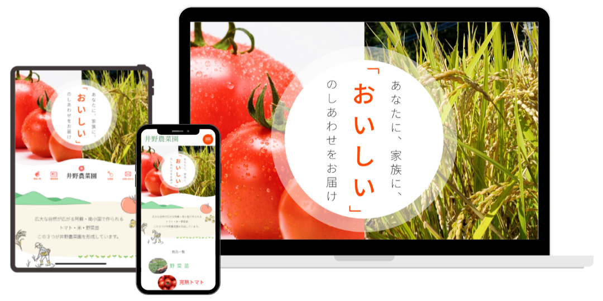
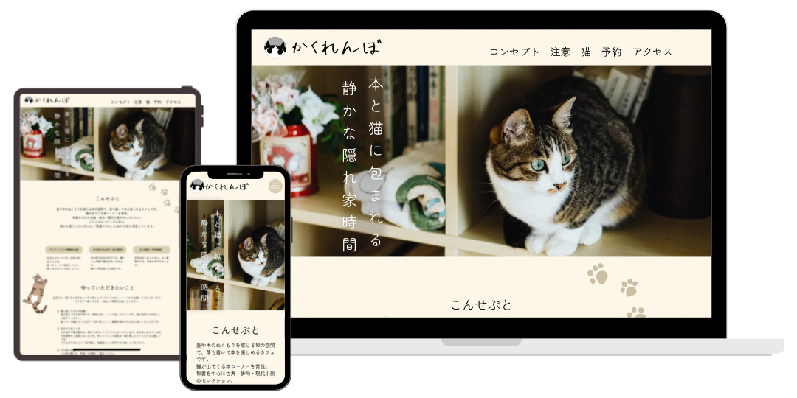
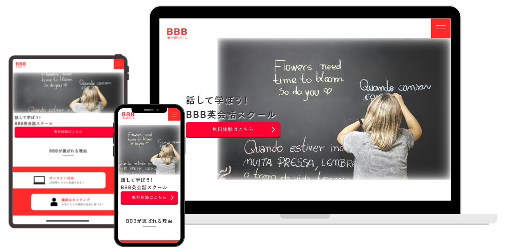
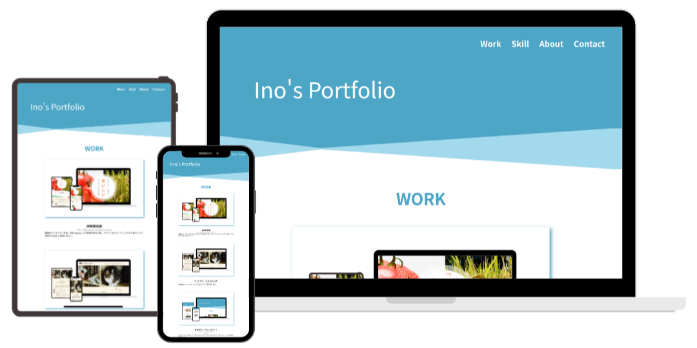

井野農菜園
- 使用言語/ツール
Figma, HTML, CSS, Javascript(jQuery)
- ページ数
4ページ
- 開発期間
半年
- ターゲット
30～40代女性、料理が趣味、旬の食べ物を食べたい、お取り寄せグルメが好き
- ポイント
実家の農園のサイト。HTML/CSSの学習を終えた後、デザインからコーディングまで自分一人で手掛けた初めてのWebサイト。

かくれんぼ cat & book cafe
- 使用言語/ツール
Figma, HTML, CSS, Javascript(jQuery)
- ページ数
1ページ
- 開発期間
期間：1カ月 実働日数：20日 実働時間：43時間
- ターゲット
20～30代読書好き、猫が好き・過去に飼っていた・実家に猫がいる
- ポイント
猫と読書を楽しめるカフェのHP。柔らかさ、リラックスできる空間を伝えられるような色味と図形、手描きのイラストで構成。

英会話スクールのサイト
- 使用言語/ツール
HTML, CSS, Javascript(jQuery)
- ページ数
1ページ
- 開発期間
期間：半月 実働日数：6日 実働時間：14時間
- ポイント
架空の英会話スクールのサイト。XDデザインカンプからのコーディング課題。ファーストビュー画像のアニメーション切り替え、特徴とスクール生の声の部分にはinviewプラグインを使用。

自身のポートフォリオサイト
- 使用言語/ツール
Figma, HTML, CSS, Javascript(jQuery)
- ページ数
1ページ
- 開発期間
1ヶ月
- ポイント
自分の好きな色で構成。見やすくシンプルなデザインになるように制作。